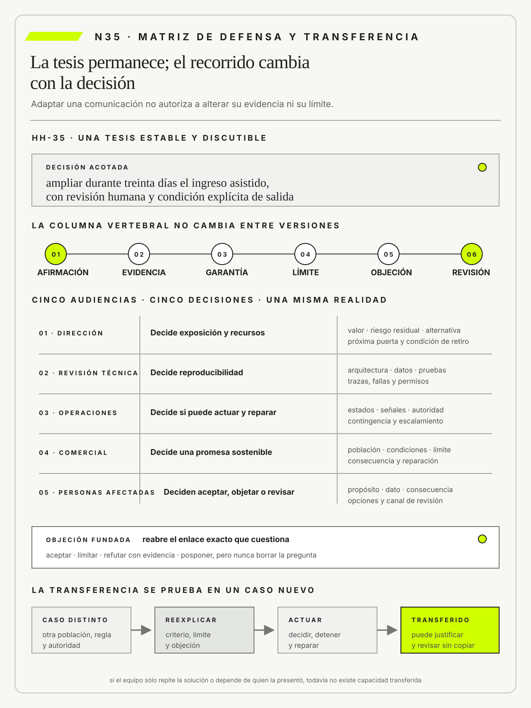

Karl Popper
The Logic of Scientific DiscoveryRoutledge · 2002
Sitúa la refutabilidad y la crítica como condiciones de una afirmación que pretende aprender de la evidencia.

Comunicar con fidelidad exige conservar evidencia, límites y revisión para cada audiencia.
Comunicar, defender y transferir criterios sin copiar soluciones
Ruta de lectura: problema, distinciones, decisiones, prueba, transferencia y preparación.

Nota. SIN NUM. identifica aparatos de orientación y referencia.
Seis referentes y las obras principales utilizadas para construir N35.
Sitúa la refutabilidad y la crítica como condiciones de una afirmación que pretende aprender de la evidencia.

Vincula representación visual, comparación e integridad de evidencia sin convertir el gráfico en decoración.

Sitúa la conversación reflexiva y la reformulación del problema dentro de la práctica profesional.

Muestra cómo seguridad psicológica y voz hacen posible objetar, reconocer límites y aprender colectivamente.

Concibe comunicación y aprendizaje como diálogo situado y no como transferencia unilateral de respuestas.

Explica aprendizaje, participación, identidad y comunidades de práctica.
N35 no resume estas fuentes ni las convierte en receta. Las pone en tensión para construir juicio profesional.
¿Cómo lograr que audiencias distintas comprendan, cuestionen y usen una intervención sin reducirla a un relato persuasivo ni copiar su forma?

La transferencia se prueba cuando otra persona reconstruye el criterio, lo objeta y actúa responsablemente.
El equipo responsable de la defensa de Hotel Horizonte presenta la intervención con una única secuencia de diapositivas. Dirección escucha demasiado detalle técnico, Tecnología recibe conclusiones sin evidencia y Recepción no encuentra qué debe hacer ante una excepción.
La propuesta era la misma, pero la decisión de cada audiencia era distinta. Comunicar profesionalmente no consiste en simplificar un contenido fijo. Consiste en conservar la cadena de evidencia mientras cambian el foco, el lenguaje, la forma y la profundidad.
Defender tampoco significa neutralizar objeciones. Una objeción puede revelar evidencia faltante, una autoridad ausente o un costo desplazado.
El equipo responsable de la defensa diseña cinco recorridos conectados por el mismo expediente. Cada uno declara decisión solicitada, afirmaciones, fuentes, incertidumbre, consecuencias y próximo paso.
Cada recorrido conserva además una condición observable para revisar la decisión comunicada.
La transferencia se prueba cuando otra persona puede aplicar criterios en un caso nuevo sin copiar la solución del hotel.
N35 recibe de N34 una cadena integrada y la convierte en capacidad de comunicación, defensa, apropiación y transferencia.

HH-35 parte del expediente integrado de HH-34. Federico Müller presenta treinta diapositivas al comité y demuestra trazabilidad técnica. Elena Acosta entiende que la solución está lista para ampliarse; Ricardo Sosa interpreta que la exposición sigue limitada. La misma presentación contiene datos correctos, pero no explicita qué decisión corresponde a cada audiencia ni qué condición permanece abierta.

El equipo prepara cinco defensas vinculadas por una cadena común. Dirección recibe decisión, valor, riesgo residual y próxima puerta. La revisión técnica a cargo de Federico recibe arquitectura, datos, pruebas y trazas. Operaciones, con Ricardo Sosa, Lucía Ferreyra y Mariela Benítez, recibe estados, señales, autoridad de detención y reparación, y ensaya casos de excepción. Comercial, con Camila Duarte, revisa qué promesa puede comunicar. Las personas afectadas reciben alcance, uso de datos, límite y vía de reclamo en lenguaje comprensible. Ninguna versión inventa una certeza que el expediente no posee.
La matriz HH-35 une afirmación, evidencia, garantía, objeción y respuesta. Elena pregunta por costo, Federico por integridad, Ricardo por capacidad de sostener, Lucía por excepción y Camila por impacto comercial. Las objeciones no se clasifican como resistencia: obligan a localizar un supuesto o una decisión ausente. Los gráficos sólo se conservan cuando permiten comparar magnitudes, recorridos o incertidumbre sin ocultar denominadores.
La transferencia se verifica mediante reconstrucción: otro equipo debe explicar con sus palabras qué puede hacer, cuándo detenerse y qué evidencia exigir. Si sólo repite la solución del hotel, la transferencia falló. La decisión se revisará después del primer turno operado sin integrantes del equipo original.
Antes de exponer, el equipo construye un inventario de decisiones para las mismas cinco audiencias. Dirección debe resolver si financia una ampliación acotada; la revisión técnica, si la arquitectura y las pruebas sostienen los reclamos presentados; Operaciones y Recepción, si aceptan la capacidad, la contingencia y la autoridad de interrupción del turno; Comercial, qué promesa puede sostener; y las personas afectadas, si aceptan una alternativa o solicitan revisión. Cada decisión queda vinculada con la evidencia mínima que la vuelve responsable. Así se evita que una frase como «la prueba fue exitosa» funcione a la vez como dato técnico, autorización presupuestaria y permiso para prometer.
La prueba de transferencia incorpora una reserva que no apareció en la capacitación: una familia llega antes de horario, una persona necesita una habitación accesible y el canal de venta conserva una promesa desactualizada. El turno receptor reconstruye la prioridad, consulta la evidencia disponible y decide una reparación sin solicitar la solución al equipo de proyecto. El registro muestra dónde pidió ayuda, qué criterio modificó y qué información faltó. Si la autonomía depende de conocer de memoria el caso anterior, todavía no existe una capacidad transferida. HH-36 convertirá las diferencias entre lo planificado, lo comunicado y lo ocurrido en material de aprendizaje profesional.
Una comunicación profesional no es fiel por repetir el mismo mensaje, sino por conservar evidencia, límites y condición de revisión mientras adapta el recorrido a la decisión de cada audiencia. La defensa falla si neutraliza objeciones y la transferencia falla si quien recibe sólo puede copiar la solución o depender del equipo original; por eso ambas se prueban en un caso nuevo donde otra persona debe reconstruir el criterio, objetarlo y actuar responsablemente.
Una comunicación profesional adapta el recorrido a la decisión de cada audiencia sin alterar la afirmación, la evidencia, la garantía, el límite, la objeción ni la condición de revisión.

N34 construyó un expediente que otra persona puede recorrer y cuestionar. N35 parte de esa misma cadena para diseñar comunicaciones diferentes según la decisión, el conocimiento y la exposición de cada audiencia.
La defensa conserva evidencia y límites mientras cambia forma y profundidad. La transferencia se demuestra cuando quien recibe puede enfrentar una objeción y actuar en un caso nuevo. N36 utilizará esa expectativa para comparar lo comunicado con lo que realmente ocurre.
Toulmin, S. permite adaptar la exposición de un argumento sin perder la relación entre afirmación, evidencia, garantía, alcance y refutación.
Tufte, E. R. vincula forma gráfica con densidad e integridad de evidencia.
Schön, D. A. permite entender la defensa como una conversación reflexiva capaz de reformular el encuadre frente a una objeción fundada.
Argyris, C. explica cómo rutinas defensivas permiten preservar una imagen de competencia a costa de ocultar errores y bloquear aprendizaje.
Freire, P. concibe comunicación y aprendizaje como diálogo con sujetos capaces de interpretar y transformar, no como depósito unilateral de respuestas.
Wenger, E. muestra que transferir capacidad exige participación, identidad y práctica compartida, además de información disponible.
Heath, C. y Heath, D. identifican recursos para construir mensajes concretos y recordables, que N35 subordina a la integridad de la evidencia.
Norman, D. A. vincula comprensión, retroalimentación y modelos conceptuales con la posibilidad de actuar y recuperarse ante errores.
ISO 9241-210:2019 exige comprender usuarios, tareas y contextos, involucrar personas y evaluar diseños a lo largo del ciclo de vida.
W3C, mediante WCAG 2.2, aporta criterios verificables para que una comunicación digital sea perceptible, operable, comprensible y robusta.
El trabajo de liderazgo de pensamiento del Project Management Institute propone comunicar éxito como valor defendible frente al esfuerzo y al gasto, y no como simple cierre del plan.
Checkland, P. y Poulter, J. usan modelos como dispositivos para una conversación estructurada, no como descripciones definitivas que deban imponerse.
Popper, K. exige que una defensa exponga qué evidencia podría refutarla; Edmondson, A. C. explica las condiciones que permiten formular objeciones, reconocer errores y sostener aprendizaje colectivo sin convertir el desacuerdo en amenaza.
Una audiencia profesional se define por la decisión que debe tomar, el conocimiento que posee, la responsabilidad que asume y la exposición que enfrenta. No es un segmento demográfico ni un nivel jerárquico. Las mismas evidencias cambian de función cuando se usan para asignar inversión, operar una contingencia o discutir una reparación.
En Hotel Horizonte, Dirección decide alcance y recursos, mientras Recepción decide cómo continuar un caso. Elena Acosta necesita alternativas, valor y riesgo residual; Lucía Ferreyra requiere estados, límites de autoridad y una ruta inmediata. Federico Müller necesita reproducibilidad técnica y Ricardo Sosa necesita capacidad operativa. Enviarles la misma presentación puede producir acuerdos aparentes y acciones incompatibles.
Diseñar la comunicación comienza por formular qué debe poder decidir cada audiencia al terminar. Luego se seleccionan detalle, evidencia y lenguaje sin alterar la tesis. Adaptar no significa ocultar riesgos ni cambiar la conclusión para agradar. Si dos audiencias reciben recomendaciones incompatibles, el problema está en la intervención o en su gobierno, no en el estilo de las diapositivas.
La caracterización se apoya en entrevistas breves, observación del trabajo y revisión de obligaciones, no en estereotipos sobre cargos. Dos integrantes de Dirección pueden necesitar recorridos distintos si una persona autoriza presupuesto y otra responde por privacidad. También cambia la comunicación cuando alguien soporta una consecuencia sin poseer autoridad formal. La matriz registra qué pregunta razonable podría formular cada actor y qué decisión no le corresponde. Esta distinción previene dos errores: saturar de detalle a quien necesita elegir una alternativa y privar de fundamentos a quien deberá responder por el resultado.
Una tesis comunicable expresa una afirmación central, el mecanismo que la sostiene, su alcance y la consecuencia práctica. Se diferencia de un eslogan porque puede ser discutida y refutada. También se diferencia de una lista de beneficios, que enumera resultados sin explicar por qué deberían ocurrir.
La propuesta del hotel conecta menor espera con reglas compartidas y capacidad de reparación. Esa formulación obliga a mostrar cómo los estados de Housekeeping, Recepción y Comercial se coordinan, qué casos quedan fuera y qué evidencia permite atribuir la mejora. «La plataforma mejora la experiencia» sería más breve, pero no orientaría ninguna decisión ni anticiparía un límite.
La tesis debe conservarse al cambiar de formato o audiencia. Puede ampliarse con arquitectura para Federico y con consecuencias operativas para Lucía, sin transformarse en otra promesa. Si necesita demasiadas excepciones para seguir siendo verdadera, corresponde reducir su alcance. Una tesis precisa permite defender, transferir y revisar la intervención.
Para comprobar su estabilidad, el equipo redacta una versión de una oración, otra de un párrafo y una tercera acompañada por el expediente. Luego identifica sujeto, mecanismo, población, horizonte y límite en las tres. Si alguno desaparece, la síntesis cambió la afirmación y no sólo su extensión. En HH-35, «la coordinación reduce la espera en ingresos ordinarios cuando los estados y la reparación están disponibles» resiste esa prueba; «digitalizar acelera el hotel» no identifica mecanismo, población ni condición. La forma breve es válida únicamente si conserva la posibilidad de reconstruir la versión completa.
Un argumento vincula una afirmación con evidencia mediante una garantía explícita. La evidencia muestra qué ocurrió; la garantía explica por qué ese hecho respalda la conclusión. Afirmar que dos tiempos bajaron no demuestra que el sistema causó la mejora si al mismo tiempo cambió la dotación, la política o la población.
En Hotel Horizonte, un episodio y una traza sostienen la explicación. La reserva muestra la consecuencia para el huésped; el registro técnico reconstruye estados y decisiones. La garantía relaciona la coordinación semántica con la reducción de espera. También se conservan condiciones de excepción y explicaciones rivales, como una mejora producida por capacitación.
La fuerza del argumento depende del uso solicitado. Para explorar alcanza una señal provisional; para ampliar autonomía hacen falta contraste, repetición y reparación probada. Citar una fuente prestigiosa no reemplaza la garantía local. La audiencia debe poder señalar qué enlace cuestiona y qué evidencia adicional cambiaría la recomendación.
Una tabla de argumentos evita mezclar niveles. Para cada afirmación registra fuente, unidad de análisis, período, transformación, explicación rival y decisión habilitada. La disminución del tiempo medio puede apoyar una exploración, pero no una ampliación si aumentó la dispersión o si quedaron fuera casos accesibles. La garantía explica por qué la medida representa la experiencia que se quiere mejorar y bajo qué condiciones deja de hacerlo. Cuando el enlace depende de un juicio normativo, se lo declara como tal: ningún cálculo decide por sí mismo cuánto riesgo residual es aceptable para otra persona.
La matriz de Toulmin permite someter una recomendación concreta a esa disciplina. En HH-35, la afirmación no es «el piloto funcionó», sino «conviene ampliar durante treinta días la asistencia al turno diurno y conservar revisión humana en cada cambio de habitación». Los registros de espera, las intervenciones de Recepción y las reparaciones completadas forman los datos. La garantía sostiene que, si los estados compartidos reducen demoras sin impedir intervención ni reparación, una exposición limitada puede producir valor con un riesgo gobernable. El calificador «durante treinta días y sólo en turno diurno» evita convertir una señal local en autorización general. La excepción más fuerte indica que la mejora pudo depender de la presencia de Lucía, quien conocía las inconsistencias del piloto. Por eso se incorpora un turno sin integrantes del equipo original y se declara que una degradación de la reparación refutaría la recomendación de ampliar.
Cada marco examina una falla diferente del mismo argumento. Toulmin obliga a localizar el puente entre dato y conclusión, pero no determina por sí solo si la prueba buscó activamente evidencia contraria. Popper aporta esa exigencia: antes de defender la propuesta se registra qué observación la haría caer, como un aumento de reservas corregidas fuera de plazo o la incapacidad del turno receptor para detener una respuesta. El enfoque de éxito del Project Management Institute desplaza la discusión desde el cumplimiento del cronograma hacia el valor y las consecuencias de la decisión, aunque no reemplaza la prueba causal ni define qué daño resulta aceptable. Tufte, a su vez, permite comprobar si la representación conserva denominadores, dispersión y comparaciones. Los cuatro lentes no se acumulan como citas equivalentes: argumento, refutación, valor y representación cubren preguntas complementarias.
La defensa se organiza entonces como una secuencia verificable. Primero se presenta la decisión acotada, no una celebración del proyecto. Después se abre la afirmación con sus datos, garantía, calificador y refutación. Luego se muestra una distribución por turno junto con la tabla de origen, de modo que el promedio no oculte que la mejora se concentra donde estaba la persona experta. Finalmente, cada audiencia recibe una pregunta acorde con su autoridad. Federico intenta reproducir la traza, Ricardo evalúa capacidad y contingencia, Elena decide exposición y Lucía prueba si puede detener y reparar. Una respuesta persuasiva que no supera alguno de esos exámenes queda registrada como hipótesis, no como autorización.
Una narrativa ejecutiva organiza contexto, decisión requerida, alternativas, valor, riesgo y compromiso. No simplifica mediante la eliminación de incertidumbre, sino mediante una jerarquía que permite reconocer primero lo decisivo y acceder después a sus fundamentos. La secuencia debe conducir a una elección, no exhibir el recorrido completo del equipo.
El comité del hotel ve el problema de la promesa incumplida, las opciones consideradas y la condición de salida. La recomendación se presenta junto con costo, población, riesgo residual y señales que habilitan ampliación o retiro. Un episodio concreto muestra la consecuencia antes de que los indicadores agregados expliquen escala y frecuencia.
La narración pierde integridad si guarda el principal límite para un anexo o si confunde cronología del proyecto con lógica de decisión. Elena necesita conocer qué debe resolver hoy y qué puede esperar. El detalle técnico permanece disponible para la defensa, pero la síntesis no formula una certeza mayor que la evidencia que la sostiene.
El orden narrativo se prueba con una lectura interrumpida. Después del episodio inicial, quien escucha debe poder nombrar el problema y la decisión solicitada; después de las alternativas, explicar por qué se prefiere una; después de la evidencia, reconocer su alcance; y al final, identificar compromiso y revisión. Si la conclusión sólo resulta comprensible al conocer toda la historia del proyecto, la secuencia privilegia al equipo expositor. El relato ejecutivo no borra el trabajo previo: lo organiza alrededor de la elección que otra persona debe asumir y permite abrir cada fundamento cuando aparece una objeción.
La defensa técnica expone arquitectura, contratos, datos, pruebas, límites y operación de manera que otra persona pueda cuestionar y reproducir el razonamiento. No consiste en enumerar herramientas ni en aumentar el detalle hasta volver invisible la decisión. Cada elemento debe relacionarse con una afirmación o un riesgo material.


En Hotel Horizonte, Tecnología reproduce una prueba adversa. Federico muestra versiones, fuentes, permisos, trazas y el estado final, y explica qué control impidió una modificación indebida. Ricardo verifica que la contingencia funcionó bajo carga y Lucía confirma que la interfaz permitió intervenir. La defensa integra esas perspectivas en lugar de privilegiar sólo el registro técnico.
Una respuesta honesta distingue evidencia, inferencia y decisión. Cuando falta información, se declara el límite y la prueba propuesta. La defensa es satisfactoria si un revisor competente puede reconstruir el resultado y localizar desacuerdos. Ganar una discusión sin revelar una fragilidad puede conseguir aprobación, pero degrada el gobierno posterior.
La sesión técnica incluye una reconstrucción independiente. Otra persona obtiene la versión desplegada, reproduce un episodio y compara el resultado con la afirmación presentada. No alcanza con mostrar capturas seleccionadas por quien construyó el sistema. Se revisan también fallas conocidas, deuda aceptada, dependencias externas y permisos de emergencia. Cada pregunta se responde con una fuente o se incorpora como incertidumbre. Este procedimiento desplaza la autoridad desde la elocuencia del especialista hacia la posibilidad de inspeccionar el sistema. La discrepancia documentada queda asociada a una acción, una aceptación explícita o una condición que impide ampliar.
Una transferencia operativa comunica capacidad para observar, decidir, actuar y reparar. No equivale a entregar documentación al final. Requiere que el equipo receptor pueda operar escenarios ordinarios y adversos sin depender del conocimiento privado de quienes construyeron la solución.
El turno nocturno del hotel debe resolver una excepción sin llamar al proyecto. La transferencia incluye estados reconocibles, permisos, umbrales, contactos de escalamiento y una ruta manual. Se ensayan una política ambigua, una herramienta caída y una reserva que exige reparación. El resultado se mide en decisiones correctas, no en asistencia a una capacitación.
La transferencia también comunica límites. Recepción necesita saber qué no puede prometer y cuándo suspender la automatización. Tecnología conserva responsabilidades que no deben desplazarse a la operación. Si el equipo receptor puede repetir el procedimiento pero no explicar su criterio, existe obediencia temporal, no capacidad transferida.
Una observación posterior confirma si esa autonomía se sostiene durante el trabajo real y no sólo en el ejercicio preparado.
La aceptación se registra por capacidades y no por documentos entregados. Para cada situación se identifica señal inicial, decisión permitida, acción segura, evidencia posterior y persona a quien escalar. El turno receptor ejecuta un escenario sin instrucciones paso a paso y explica por qué detuvo o continuó. Quien transfiere observa sin resolver por adelantado. Los errores recurrentes se convierten en cambios de interfaz, reglas o capacitación, según su mecanismo. Una firma de recepción certifica disponibilidad de materiales; sólo una ejecución autónoma y revisable demuestra que la operación puede sostener la promesa.
La comunicación con personas afectadas explica qué ocurrió, qué consecuencia produce, qué opciones existen y cómo obtener revisión o reparación. No es marketing ni un descargo legal ilegible. Debe ser oportuna, accesible y proporcional al impacto, y evitar atribuir a la tecnología una autoridad que pertenece a la organización.
El huésped de Hotel Horizonte necesita comprender por qué cambió su reserva y qué puede hacer. Lucía comunica el estado relevante, reconoce la promesa y ofrece alternativas concretas. No expone arquitectura innecesaria ni usa «lo decidió el sistema» como cierre. Si hubo un error, informa la corrección y el canal para cuestionarla.
La transparencia debe evaluarse desde la acción posible para quien recibe el mensaje. Una explicación técnicamente exacta puede ser inútil si llega después del registro de ingreso o exige conocimiento especializado. Registrar preguntas y reclamos permite revisar el diseño. Hablar con personas afectadas no sustituye incorporarlas en la evaluación de consecuencias.
La organización prueba el mensaje con personas que no participaron en el proyecto. Les pide que expliquen qué ocurrió, qué opción conservan, qué información se usó y cómo cuestionar la decisión. Una respuesta correcta no requiere repetir vocabulario técnico. Si varias personas creen que reclamar perjudicará futuras reservas, el canal no es realmente accesible aunque el enlace exista. La comprensión se evalúa junto con oportunidad, idioma, soporte y posibilidad efectiva de reparación. Las dudas recogidas retroalimentan el contrato, la interfaz y la política, porque una comunicación confusa puede revelar una responsabilidad todavía mal definida.
Un episodio permite comprobar la diferencia entre informar y habilitar una acción. Una huésped recibe un mensaje automático que anuncia el cambio de categoría, incluye un enlace a condiciones generales y termina con «operación procesada». La información es exacta, pero no dice quién decidió, si la alternativa tiene costo, cómo rechazarla ni cuánto demora la revisión. Lucía reformula el mensaje en cuatro bloques: cambio observado, consecuencia concreta, opciones equivalentes y canal de revisión con plazo y responsable. La persona elige atención telefónica y explica con sus palabras que puede conservar la reserva original o aceptar otra habitación sin recargo. Si no puede identificar esas opciones, el envío no se considera comprendido aunque figure como entregado.
Freire ayuda a reconocer que esa comprobación no es una lección unilateral: la persona afectada interpreta el problema desde una experiencia y puede cuestionar la definición institucional de la solución. ISO 9241-210 agrega la necesidad de estudiar tareas, contexto y uso a lo largo de iteraciones, por lo que la prueba incluye el momento de llegada, el dispositivo y la presión del trámite. WCAG 2.2 ofrece criterios verificables de percepción, operación, comprensión y robustez para el canal digital, pero aprobarlos no demuestra que exista una reparación practicable. Norman permite examinar si el mensaje muestra estado, opciones y retroalimentación de modo compatible con el modelo conceptual de quien actúa. Estos lentes se contrastan porque diálogo, proceso de diseño, accesibilidad técnica y comprensión de la acción no son sinónimos.
La devolución también distribuye poder. Se registra qué observación de una persona afectada modifica el mensaje, la política o la alternativa ofrecida, y se comunica el resultado. Si se solicita opinión pero todas las decisiones permanecen cerradas, existe extracción de información y no participación. Cuando una restricción legal o contractual impide aceptar una propuesta, se explicita quién resolvió y con qué fundamento. De ese modo, la comunicación accesible no se limita a palabras sencillas: permite reconocer la autoridad organizacional, disputar una consecuencia y verificar que el reclamo produjo una respuesta trazable.
Una objeción cuestiona una afirmación, una evidencia, la garantía que las vincula, la consecuencia o la autoridad para decidir. No es resistencia que deba vencerse. Tratarla como una prueba del argumento permite descubrir supuestos y costos que una audiencia homogénea no había visto.
Operaciones objeta que la contingencia del hotel no funciona bajo carga. La afirmación puede ser cierta aunque el piloto técnico haya tenido éxito, porque faltaban simultaneidad, turno nocturno y ausencia de la persona experta. El equipo identifica qué parte del argumento cae, diseña una prueba y mantiene la decisión abierta hasta obtener evidencia.
No todas las objeciones tienen el mismo peso. Deben distinguirse desacuerdo de valores, dato contradictorio, límite de alcance y preferencia personal. Responder requiere evidencia o una decisión explícita, no retórica defensiva. Una objeción documentada que no cambia la propuesta debe conservar la razón de su descarte.
Un registro de objeciones identifica quién la formula, qué elemento cuestiona, qué consecuencia anticipa y qué evidencia permitiría resolverla. La respuesta puede aceptar, limitar, refutar o posponer la afirmación, pero nunca borrar la pregunta. En el hotel, la objeción de Lucía sobre el turno nocturno modifica la población de la prueba; la de Federico sobre integridad exige una traza; la de Camila sobre conversión plantea un conflicto de objetivos que Elena debe decidir. Clasificar bien impide responder con más datos a una disputa normativa o con autoridad jerárquica a una contradicción empírica.
Comunicar incertidumbre distingue desconocimiento, variabilidad y desacuerdo, y los relaciona con una decisión. No consiste en agregar una advertencia genérica ni en presentar rangos sin interpretación. La audiencia necesita comprender qué puede variar, con qué consecuencias y qué evidencia modificaría la recomendación.
El equipo declara qué dato haría cambiar la propuesta para Hotel Horizonte. Puede aceptar una prueba limitada mientras faltan casos de alta demanda, pero no atribuir esa ausencia a seguridad. Elena conoce el riesgo residual; Lucía, los episodios que debe escalar; Federico, las señales que obligan a revisar el modelo o la fuente.
La forma importa. Un intervalo, un escenario o una frase calibrada deben conservar la misma prudencia. Exceso de precisión puede producir certeza ficticia y una lista indiscriminada de dudas puede paralizar. La comunicación es responsable cuando la incertidumbre se traduce en alcance, contingencia, fecha y autoridad.
Las distintas audiencias reciben el mismo límite material, aunque cambie la manera de explicarlo y la evidencia que necesitan examinar.
La calibración usa expresiones vinculadas con acciones. «Existe incertidumbre» no indica qué hacer; «faltan episodios de alta demanda, por lo que la autonomía queda limitada al turno diurno hasta observar veinte casos» conecta ausencia, alcance y revisión. Los rangos incluyen población y fuente, y los escenarios explicitan supuestos. También se distingue incertidumbre reducible mediante una prueba de desacuerdo sobre valores que requiere decisión. De este modo, la prudencia no se convierte en evasión. Cada audiencia sabe qué compromiso puede asumir hoy y qué hallazgo obligaría a detener, reparar o volver a deliberar.
La evidencia visual organiza relaciones, cantidades o secuencias cuya estructura se comprende mejor al verla. No es decoración ni sustituto del argumento. La forma elegida debe corresponder al fenómeno: una serie para cambio temporal, una distribución para variabilidad, un mapa para dependencias y un flujo para secuencia.
Un mapa de Hotel Horizonte conecta actores, estados y reparación. Permite observar dónde una promesa cruza Comercial, PMS, Housekeeping y Recepción, y qué rutas carecen de autoridad. Un gráfico de promedio no mostraría esa topología. Cada etiqueta usa términos del expediente y cada enlace puede rastrearse hasta evidencia.
Una visualización debe revelar también límites. Escalas truncadas, categorías mezcladas o color sin alternativa pueden inducir una conclusión que los datos no sostienen. La fuente, el período y la población acompañan la imagen. Si el gráfico necesita una explicación oral para corregir una lectura previsible, el diseño todavía no comunica evidencia.
Antes de publicar, el equipo somete cada pieza a una lectura adversa. Comprueba si el orden visual induce causalidad, si el área representa magnitudes, si la ausencia de datos queda visible y si color, contraste y texto alternativo permiten otra vía de acceso. Luego compara el gráfico con la tabla de origen y con una versión textual. En HH-35, una distribución por turno reemplaza al único promedio porque muestra que la mejora se concentra donde estaba la persona experta. La decisión cambia: ya no se amplía, sino que se investiga qué capacidad manual produjo el resultado.
Transferir por criterios consiste en conservar preguntas, mecanismos, condiciones y límites al cambiar de contexto. No implica copiar roles, pantallas o métricas del caso original. Una solución es contingente; el criterio permite decidir qué debe reconstruirse antes de adoptar algo equivalente.
Otro hotel puede usar los criterios de HH-35 y diseñar una contingencia distinta. Repite preguntas sobre promesa, evidencia, autoridad y reparación, pero adapta estados, canales y responsabilidades. Si su operación terceriza Housekeeping, la frontera cambia y también las pruebas necesarias, aunque el producto tecnológico sea el mismo.
La transferencia se valida mediante un caso que fuerce diferencias relevantes. El equipo receptor explica qué preservó, qué modificó y por qué. Copiar una configuración exitosa sin reconstruir población y consecuencia produce imitación, no aprendizaje. El criterio se fortalece cuando permite reconocer que en otro contexto la decisión correcta es no adoptar.
El expediente conserva esas adaptaciones para distinguir una transferencia razonada de una desviación que vuelve incoherente el propósito original.
La ficha de transferencia separa invariantes y variables. Permanecen la obligación de identificar población, autoridad, evidencia, consecuencia y revisión. Cambian actores, normas, canales, ritmos y posibilidades de reparación. El equipo receptor justifica cada adaptación con evidencia local y mantiene un vínculo con el criterio de origen. Si una diferencia elimina una condición esencial, no se disfraza como adaptación: se reconoce que el criterio no aplica. Esta disciplina protege tanto contra la copia acrítica como contra una flexibilidad ilimitada que permitiría atribuir el mismo nombre a prácticas incompatibles.
La primera transferencia a otro hotel fracasa de una manera informativa. El equipo receptor copia el umbral de diez minutos usado por Hotel Horizonte y el mismo formulario de escalamiento, pero opera con Recepción tercerizada, turnos más breves y ninguna autoridad local para cambiar una habitación. En el ensayo, la persona reconoce el desvío y completa el formulario, aunque el huésped espera cuarenta minutos porque nadie puede autorizar la reparación. La capacitación había transferido una secuencia y no la relación entre señal, autoridad y consecuencia. El equipo vuelve al criterio de origen, identifica quién puede ofrecer una alternativa, modifica el contrato con la empresa operadora y define una contingencia que no depende de la estructura de HH-35. La segunda prueba usa una reserva grupal no ensayada y exige justificar por qué el nuevo umbral es distinto.
Wenger permite interpretar la capacidad como participación en una práctica y no como mera posesión de un manual: el equipo receptor necesita acceso legítimo a decisiones, lenguaje compartido y reconocimiento para actuar. Schön aporta la reflexión durante el episodio, cuando el caso no coincide con la instrucción y debe reformularse el problema. Argyris distingue corregir el tiempo de respuesta de revisar el supuesto que dejó la autoridad fuera de la transferencia. Edmondson explica por qué una persona tercerizada podría reconocer el problema y aun así callar si señalarlo amenaza su posición. La evaluación combina esos lentes: observa actuación situada, reconstrucción del encuadre, revisión de reglas y condiciones para formular objeciones. Ninguno, aislado, prueba que la transferencia se sostenga.
La defensa final del equipo receptor debe mostrar esa transformación. Se presenta la diferencia contextual, la evidencia que invalidó la copia, el criterio que permaneció y la nueva distribución de autoridad. El equipo de Hotel Horizonte no aprueba la semejanza con su diseño, sino la trazabilidad de la adaptación. Si la nueva solución contradice un artefacto de HH-35 pero conserva población, consecuencia, supervisión y reparación, puede constituir una transferencia mejor lograda que una réplica visualmente idéntica. También se conserva el fracaso inicial para que futuros equipos reconozcan que cumplir un procedimiento no equivale a poder producir el resultado responsable que lo justificaba.
La comprobación por reexplicación verifica apropiación pidiendo a quien recibe una capacidad que reconstruya el criterio con sus propias palabras y lo use en una situación nueva. No consiste en repetir una definición ni en aprobar una exposición. La evidencia está en la decisión, la justificación y la identificación de límites.
Un equipo nuevo explica cuándo no usar el agente de Hotel Horizonte. Luego analiza un episodio con política contradictoria y demuestra cómo suspender, escalar y reparar. Quienes transfieren escuchan errores de interpretación y corrigen el material o el entrenamiento. Si sólo evalúan memoria, no pueden saber si el equipo operará bajo presión.
La reexplicación también revela fallas de diseño. Cuando varias personas reconstruyen de forma distinta un mismo umbral, puede existir ambigüedad en el sistema y no déficit individual. La transferencia concluye cuando el equipo receptor puede cuestionar el criterio, adaptarlo con trazabilidad y enseñarlo a otra persona, sin depender de la autoridad de quien lo presentó.
La prueba incluye tres niveles. Primero, la persona reconstruye la lógica sin consultar el material. Segundo, aplica el criterio a un episodio con una diferencia relevante. Tercero, explica a otra persona qué decisión tomó y responde una objeción no prevista. Quienes observan registran errores de comprensión, vacíos del material y desacuerdos legítimos. No se penaliza una adaptación fundada que difiere de la solución original. El fracaso aparece cuando el criterio se vuelve una consigna, cuando se omite una consecuencia o cuando nadie sabe qué evidencia reabriría la decisión. Así, enseñar se convierte en una prueba del diseño y no en una ceremonia final.
HH-35 prepara una defensa para una audiencia y una decisión concretas, y luego verifica si los criterios pueden transferirse. Cambiar el formato sin cambiar la lógica no es adaptación; simplificar la lógica hasta volverla irreconstruible tampoco.
La matriz se prueba primero con el comité que autoriza inversión y luego con el turno que ejecuta la contingencia. Si ambas audiencias oyen la misma presentación pero una no puede actuar ante una excepción, la comunicación no transfirió capacidad.
El expediente conserva una tabla de correspondencia entre versiones. Cada afirmación posee un identificador estable y enlaza la evidencia que la sostiene, aunque aparezca como frase, gráfico o instrucción. Las omisiones deliberadas se justifican por relevancia, confidencialidad o carga cognitiva y nunca eliminan un riesgo material para quien decide. Después de cada defensa, el equipo registra qué entendió la audiencia, qué objeción surgió y qué modificación requiere el sistema o el mensaje. La revisión no busca uniformar discursos, sino asegurar que las decisiones diferentes permanezcan compatibles con una misma realidad verificable.
Un hospital recibe el expediente del Hotel Horizonte y no copia su agente ni sus métricas. Utiliza criterios de tarea, severidad, supervisión y reparación para evaluar apoyo a la guardia.
La defensa se adapta a conducción clínica, tecnología, profesionales y pacientes, pero conserva fuentes, límites y autoridad.
La transferencia ocurre cuando el nuevo equipo produce una solución diferente con una cadena de juicio reconocible.
La guardia redefine daño, urgencia y autoridad clínica. Un falso negativo puede postergar atención y una explicación accesible debe llegar bajo presión. El equipo conserva el criterio de declarar población, fuente, límite y reparación, pero reemplaza métricas hoteleras por tiempos clínicos, severidad y escalamiento profesional. Prueba un episodio donde el sistema sugiere una prioridad y la evidencia disponible es contradictoria. La adopción queda limitada hasta que una persona autorizada pueda revisar y corregir sin perder trazabilidad. La diferencia de solución muestra que el criterio viajó sin imponer el diseño del contexto original.
Una consultora replica la presentación del hotel, cambia nombres y conserva la misma secuencia de solución.
El contexto tiene otra población, autoridad y daño. La forma viaja, pero el criterio no.
Transferir exige reconstruir el problema con las preguntas aprendidas y aceptar que la respuesta cambie.
La prueba construye dos defensas de la misma intervención. Ante Elena, el equipo solicita inversión con tesis, alternativas, riesgo y revisión; ante Lucía, entrega señales, límites, contingencia y autoridad para el turno.
Cada audiencia formula su objeción más fuerte y luego explica con sus propias palabras qué decisión puede tomar, qué evidencia la sostiene y qué haría ante una excepción. Una visualización se conserva sólo si ayuda a reconstruir esa relación.
N35 aprueba cuando un equipo de otro hotel usa los criterios para diseñar una respuesta distinta a su contexto. Si copia el artefacto o repite la recomendación sin poder defenderla, hubo difusión de una solución y no transferencia de capacidad.
La evaluación compara cuatro evidencias: la versión preparada, las preguntas recibidas, la reexplicación de cada audiencia y la actuación ante un caso adverso. Una presentación puede ser clara y aun así no producir capacidad si la decisión o la autoridad permanecen implícitas. También puede aparecer un desacuerdo razonable que no debe eliminarse: queda documentado con sus fundamentos y su efecto sobre el alcance. La ampliación sólo se autoriza cuando las personas que operan y quienes asumen consecuencias pueden identificar límites, activar reparación y explicar qué dato haría revisar el compromiso.

Adaptar a una audiencia puede convertirse en manipulación, omisión o simplificación excesiva.
Dirección, operación y personas afectadas deciden cosas distintas y observan evidencia diferente. Un único relato puede ser correcto y resultar inútil para dos de esas audiencias.
Quitar contexto, garantía y límite puede producir una frase corta pero ambigua. Claridad significa que la audiencia reconstruye qué debe decidir y por qué.
Una fuente no sostiene una conclusión sin el razonamiento que las conecta. La defensa debe explicitar ese puente y sus excepciones.
Ocultar incertidumbre puede facilitar aprobación y deteriorar la decisión. Una recomendación profesional declara alcance, supuestos y condición de revisión.
La abundancia técnica no compensa una solicitud implícita. Cada detalle debe ayudar a aceptar, limitar, rechazar o investigar una opción.
La documentación no prueba que un turno pueda reconocer y resolver una excepción. La transferencia necesita ensayo, devolución y acceso real.
Inferir necesidades sin incorporar su voz convierte representación en apropiación. La comunicación debe distinguir evidencia directa, interpretación y decisión institucional.
Una objeción puede revelar una consecuencia, una restricción o una teoría rival. Responderla exige examinar su evidencia antes de atribuir motivaciones.
Si el límite aparece sólo después del incidente, la audiencia nunca pudo aceptar conscientemente el riesgo. La duda relevante integra el mensaje principal.
Una visualización sin pregunta ni escala puede volver persuasivo un dato débil. La forma se elige por la relación que necesita comprobarse.
Trasladar el artefacto de otro contexto conserva apariencia y pierde supuestos. Lo transferible son criterios que permiten diseñar una solución nueva.
Repetir vocabulario no demuestra capacidad de defender ni actuar. La reexplicación debe incluir una objeción y una excepción no ensayada.

N35 trata la comunicación como parte de la intervención: una decisión mal comprendida puede destruir una solución técnicamente sólida. La capacidad profesional consiste en defender el razonamiento, escuchar objeciones y transferir criterios sin apropiarse de la decisión ajena.
Esta competencia cambia qué se considera terminado. Una intervención no concluye cuando existe una presentación o un manual, sino cuando cada audiencia puede reconocer su decisión, localizar la evidencia, cuestionar un límite y actuar dentro de su autoridad. También cambia la responsabilidad del equipo: debe observar interpretaciones y consecuencias posteriores, porque una ambigüedad comunicativa puede convertirse en una falla operativa. El expediente permite distinguir desacuerdo legítimo, comprensión insuficiente y diseño incoherente. Esa distinción evita atribuir a las personas un error producido por información tardía, lenguaje inaccesible o permisos contradictorios, y convierte la comunicación en una capacidad gobernada y revisable.
La defensa requiere preparación adversa. El equipo identifica la objeción que más podría cambiar la decisión y entrega a otra persona la tarea de sostenerla con la mejor evidencia disponible. Esta práctica reduce respuestas rituales y permite descubrir garantías implícitas. Una objeción aceptada puede reducir alcance o postergar la recomendación sin representar fracaso. La calidad profesional se observa en la capacidad de modificar un compromiso frente a una crítica fundada y explicar qué parte del argumento permanece vigente.
La transferencia modifica la relación con la autoría. Quien diseñó una solución deja de ser su intérprete indispensable y acepta que otro equipo produzca una respuesta diferente. Para lograrlo separa principios, condiciones y decisiones situadas, y conserva ejemplos y contraejemplos. El reconocimiento no depende de que la forma original se replique. Depende de que la nueva intervención pueda justificar qué mantuvo, qué cambió y cómo responderá ante una consecuencia. Esa autonomía es más exigente que difundir buenas prácticas o entregar una plantilla.
Adaptar a una audiencia puede convertirse en manipulación, omisión o simplificación excesiva. Quien presenta controla selección y forma de la evidencia; debe hacer visibles incertidumbre, conflicto de interés y voces que no están presentes para objetar.
La jerarquía modifica qué preguntas se formulan. Una persona puede reexplicar correctamente y aun así no sentirse autorizada a objetar a Dirección. La comprobación combina ejercicios individuales, canales previos y observación de decisiones reales, y distingue silencio de acuerdo. Quien facilita hace visible qué objeciones cambiaron la propuesta y cuáles fueron descartadas, con sus razones. Sin esa devolución, pedir participación puede convertirse en una ceremonia que extrae información sin distribuir influencia.
La accesibilidad no se agrega después de cerrar el mensaje. Estructura, lenguaje, contraste, texto alternativo, ritmo y formato determinan quién puede examinar la evidencia y actuar. Una visualización compleja necesita una descripción que conserve la relación relevante, no una etiqueta genérica. Una reunión oral requiere una vía equivalente para quien no puede asistir. Si la alternativa accesible pierde el límite o la incertidumbre principal, no comunica la misma decisión. W3C aporta criterios, pero la prueba final corresponde al uso situado.
La confidencialidad crea otra tensión. La defensa técnica puede requerir trazas o episodios que contienen información personal o comercial. Ocultarlos por completo debilita la verificabilidad; exponerlos sin necesidad produce daño. El expediente separa acceso, anonimiza cuando corresponde y ofrece agregados sólo si conservan el fenómeno. Quien revisa debe saber qué evidencia existe, qué transformación recibió y qué limitación introduce. La reserva de información no se utiliza para blindar una afirmación frente a preguntas legítimas.
Las formas persuasivas pueden amplificar una asimetría. Una imagen emotiva, un eje recortado o una cifra sin denominador orientan una conclusión antes de que la audiencia examine el argumento. N35 no elimina recursos narrativos, pero los subordina a integridad, comparación y procedencia. La revisión adversa pregunta qué otra lectura razonable permite la pieza y qué dato ausente podría cambiarla. Si el diseño sólo funciona cuando la persona desconoce el contexto, existe manipulación y no claridad.
La defensa y la transferencia de N35 dejan una expectativa sobre lo que otras personas podrán hacer. N36 comparará esa expectativa con los resultados y las sorpresas de la práctica para revisar acciones, supuestos y formas colectivas de aprender.
Comunicar profesionalmente significa diseñar para una decisión y una audiencia sin romper la cadena entre tesis, evidencia y garantía. La mejor objeción fortalece o limita el argumento; no se clasifica de antemano como resistencia.
Transferir capacidad exige que otra persona pueda adaptar criterios, no repetir una solución. La reexplicación y el ensayo de excepción muestran si la audiencia comprendió lo suficiente para actuar y reparar.
La comunicación se considera completa cuando produce decisiones compatibles sin imponer un relato único. Dirección puede autorizar una inversión, Operaciones limitar exposición y una persona afectada solicitar reparación a partir de versiones distintas del mismo expediente. Cada versión mantiene tesis, evidencia, incertidumbre y condición de revisión. Las preguntas recibidas forman parte del resultado: muestran dónde el argumento necesita otra fuente, dónde existe un desacuerdo de valores y dónde la forma impidió comprender. La transferencia agrega una prueba en otro contexto, donde roles, métricas y solución cambian, pero sobreviven las preguntas que organizan el juicio. Si el nuevo equipo puede rechazar la propuesta original y construir una alternativa mejor fundada, el criterio fue apropiado. Si sólo reproduce diapositivas o vocabulario, hubo difusión. N35 convierte así la defensa en una conversación examinable y la enseñanza en evidencia de capacidad profesional.
Toda versión queda vinculada con el expediente común y conserva una fecha de revisión. Esa disciplina permite corregir una interpretación sin producir relatos incompatibles ni perder quién asumió cada decisión.

Audiencia y decisión: una audiencia se define por la decisión que debe tomar, su conocimiento y su exposición.
Tesis comunicable: la tesis expresa una afirmación central, su mecanismo y su alcance.
Afirmación, evidencia y garantía: un argumento conecta una afirmación con evidencia mediante una razón explícita.
Narrativa ejecutiva: la narrativa ejecutiva organiza contexto, decisión, valor, riesgo y compromiso.
Defensa técnica: la defensa técnica expone arquitectura, contratos, pruebas, límites y operación.
Transferencia operativa: la transferencia operativa comunica capacidad para observar, decidir, actuar y reparar.
Comunicación con personas afectadas: la comunicación dirigida a personas afectadas explica consecuencias, opciones, revisión y reparación.
Objeción: una objeción cuestiona afirmación, evidencia, garantía, consecuencia o autoridad.
Incertidumbre comunicada: comunicar incertidumbre distingue desconocimiento, variabilidad y desacuerdo.
Evidencia visual: la evidencia visual organiza relaciones, cantidades o secuencias que necesitan verse.
Transferencia por criterios: la transferencia conserva preguntas, mecanismos y límites al cambiar contexto.
Comprobación por reexplicación: la reexplicación verifica apropiación al pedir que se reconstruya y use el criterio.
Para el encuentro, preparar dos defensas breves de la misma intervención para audiencias con decisiones diferentes. Incluir una objeción, una incertidumbre y una pregunta de reexplicación.